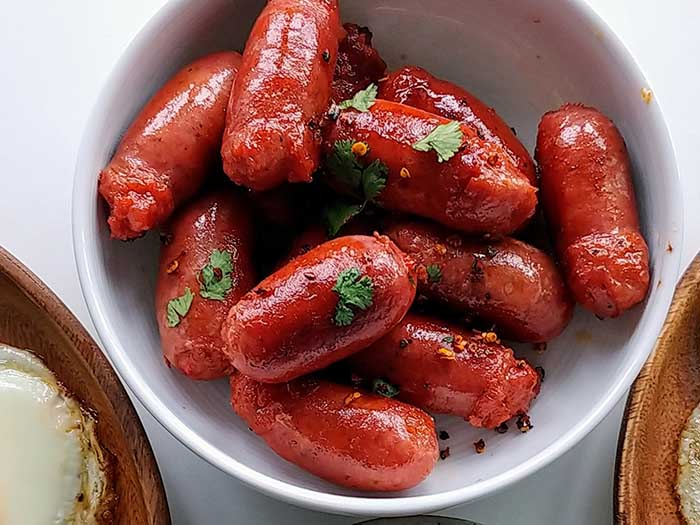

| Longganisa  | |
|---|---|
| Ingredients: hog casings rinsed ¼ cup white vinegar Sausage -- 2 lbs ground pork 1 lb ground pork back fat 1 tbsp garlic powder Spice Mixture -- ½ cup white sugar 1 tsp dried oregano ¼ tsp ground ginger ½ tsp ground black pepper 4 tsp kosher salt ½ tsp Prague Powder #1 |
Recipe: Making the Longganisa --- Combine the spice mixture ingredients in a small bowl and set to one side. In a large bowl, combine the longanisa ingredients. Add the spice mixture and white wine vinegar, combining thoroughly. Tie a knot in one end of the hog casings. Thread the other end to the sausage stuffer. Stuff the casings with longanisa mixture, twisting every ½-inch to create links. When all mixture has been used, tie a knot in the end of the hog casing. Tie butchers twine around each sausage link and cut to separate into ½-inch longanisa sausages. Place the sausages in an airtight container. Leave to cure in the refrigerator for 3-4 days. Cooking --- Remove the sausage links from the refrigerator. Poke a small slit into each link with a knife. Place sausage in a large saucepan. Add 1 cup water, bring to boil and lower to a simmer. Allow the water to evaporate and let the oils from the meat escape out of the slit. Allow to cook at a low temperature until golden-brown. |